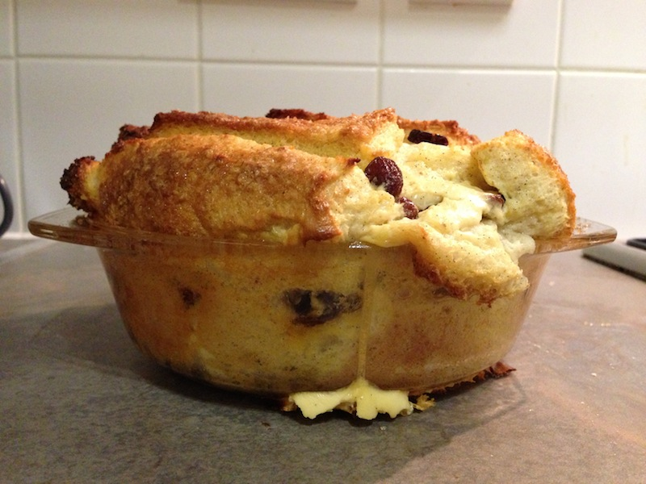

Dairy-free bread and "butter" pudding
My son and I have problems digesting dairy, so this dairy-free pudding recipe that my wife drummed up has become a firm favourite.

Ingredients:
- 75g raisins
- 37.5g caster sugar
- 5-6 slices of bread
- 50g non-dairy margarine
- 1 tbsp demerara sugar for sprinkling
- 350ml Oatley
- 2 eggs
- Seeds from 1/2 vanilla pod
Steps:
- Use a little of the margarine to grease a 2-litre pyrex dish. Gently melt the rest of the margarine in a pan. Once melted, set aside to cool. Meanwhile, mix raisins and caster sugar.
- Cut off the crusts of the bread, and cut into broad strips. Dip strips of bread into the melted margarine and use them to create three layers in the dish: margarine side down for the bottom two layers—up for the top. Sprinkle the sugar and raisin mixture evenly between the layers.
- Mix Oatley, eggs and vanilla seeds to form a custard. Pour the custard into the dish; make sure to fill all the nooks and crannies.
- Sprinkle demerara suger on top & let the pudding soak for 30 minutes.
- Cook in oven at 180 Centigrades for 35–40 minutes.